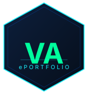

Identified all tasks required to complete the ITcPD_2026 ePortfolio assignment:
| Specific | Build a complete, publicly accessible ePortfolio at pingpwn.github.io, including an electronic CV, logo, SRL documentation, and AI use transparency, fulfilling all ITcPD_2026 deliverables. |
| Measurable | All 4 solo deliverables completed and live online; all 10 course questionnaires submitted; blog post and 2 evaluations completed with partner. |
| Achievable | Using existing web development knowledge, GitHub Pages hosting, LaTeX for PDF, and Claude Code (AI assistant) to accelerate implementation. |
| Relevant | Supports both academic requirements for ITcPD and long-term professional development as a cybersecurity professional. |
| Time-bound | All solo deliverables completed by April 2026; pair work pending coordination with partner. |
The ePortfolio serves a dual purpose: fulfilling the ITcPD course requirement and creating a professional online presence for future employment and security research recognition. This dual benefit — academic grade + career asset — provides strong intrinsic motivation. Additional reinforcement comes from the public nature of the site: the portfolio is visible to anyone, creating accountability to produce quality work.
All four solo deliverables have been completed and are publicly accessible. The dual-format CV strategy (interactive HTML + clean PDF) proved effective: the HTML version serves digital networking while the PDF is ready for formal academic and professional submission. The decision to use LaTeX for the PDF significantly improved quality over browser-based PDF export.
Using an AI assistant (Claude Code) as a learning aid was highly effective for accelerating implementation without removing the learning component — all code was reviewed and understood before publication. The SRL planning phase (task mapping, SMART goals) ensured no deliverable was overlooked. Breaking the work into discrete tasks (site → CV → logo → ePortfolio page) made a complex assignment manageable.
AI used: Claude Code (Anthropic) — generated the SVG code for the hexagonal logo based on a description of the desired style (dark navy hexagon, green VA initials, cyan ePORTFOLIO label). The design concept and identity choices were made by the student.
AI used: Claude Code (Anthropic) — wrote the HTML/CSS for the interactive web CV and the LaTeX source for the print PDF. All personal content (experience, certifications, skills, dates) was provided and verified by the student. Several iterations of corrections were made by the student to ensure accuracy.
AI used: Claude Code (Anthropic) — assisted with HTML/CSS structure for the ePortfolio page, navigation integration, and the tri-color stripe design inspired by the ITcPD course presentation. The content of all sections (goals, reflections, KPIs, AI declarations) was authored by the student.
The course requires completing a Google Form for AI use in each deliverable. Access them on the AI Use page of the course site.
Complete all questionnaires at apt2portfolio.weebly.com/evaluation.html
⏳ Pending — to be completed with partner during the performance phase.
This blog post will be published here once written collaboratively with the assigned partner. It will document shared learning experiences and reflections from the course.
⏳ Pending — two evaluations to be completed collaboratively with partner during the reflection phase.
Each evaluation will assess a peer's ePortfolio against the course criteria and provide structured feedback using the provided evaluation rubric.